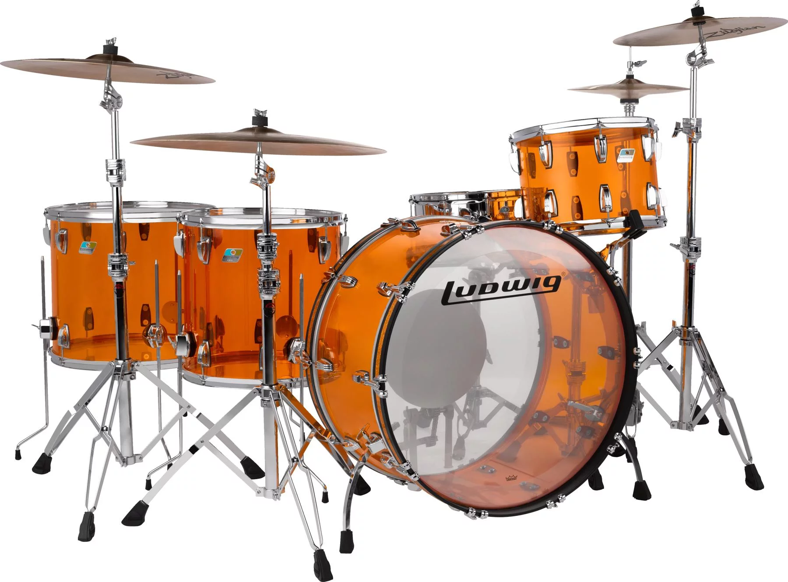
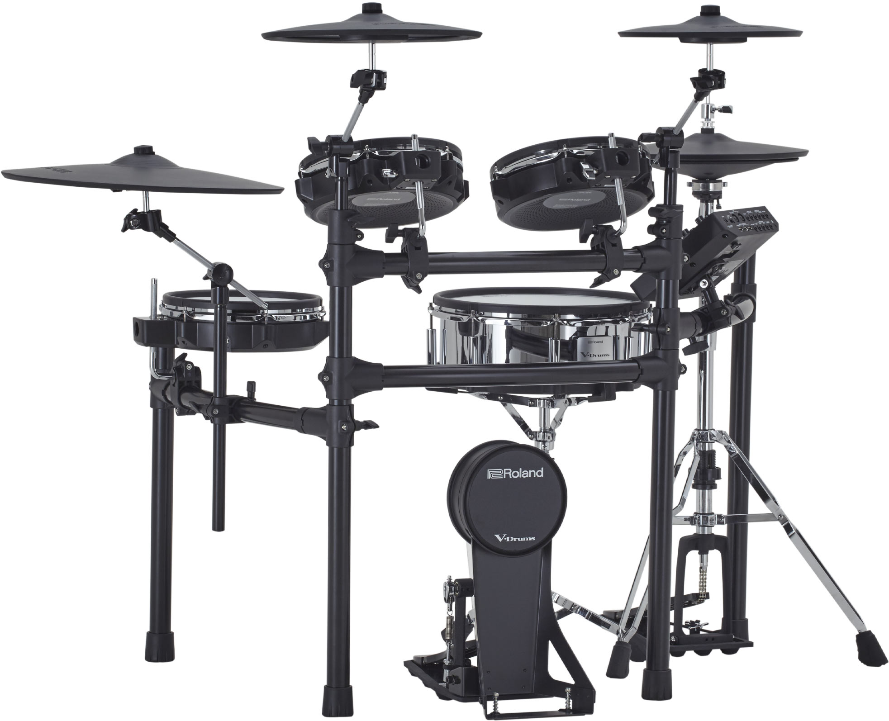

Ludwig Vistalite Zep Drum - Amber (3.999$)

Since 1909, Ludwig drums have had one of the proudest legacies in percussion, and they're a favorite of Sweetwater drummers for their sometimes warm, sometimes massive sound.
A Reproduction of Bonham's Iconic Kit
-
5-piece acrylic shell pack
-
A modern reproduction of Bonzo's iconic kit
-
Includes a Ludwig Supraphonic snare
-
Drum stand included for mounting the rack tom
-
Durable Vistalite acrylic
Yamaha DTX6K-X Electronic Drum Set (1.360$)

Superbly Playable
Reproducing the way an acoustic drum behaves when struck is a key factor in the playability of electronic drums. Our electronic drums feature a sound module that covers the full range of sound from the initial attack to the final cutoff, all based on samples of authentic drums tuned by a skilled engineer. We have carried out exhaustive testing of how acoustic drums respond when they’re hit to help achieve a truly faithful representation of drum behavior. Moreover, professional drummers from around the world have evaluated the performance of the DTX-PRO, allowing us to improve its expressive capabilities even further. The wealth of expertise we have acquired as a manufacturer of music hardware has allowed us to offer combinations of expertly-crafted modules and pads that deliver superb playability.
High-Performance Sound Engine
The high-performance sound engine equipping the DTX-PRO leverages the technologies that Yamaha has acquired over decades of making musical instruments of all kinds. As a complement to this, Yamaha drum pads feature pad sensing technologies that respond with precise accuracy to the actions of the player, delivering the ultimate in expressive capability that is reflected in the sound.
Reliable Yamaha Hardware
The Yamaha HS650A hi-hat stand is included with the DTX6K2-X and the DTX6K3-X. The DTX Series also uses traditional Yamaha ball clamps for the snare pads making fine adjustment of settings easy.
An extensive range training functions to support drummers
The best practice functions featured in previous DTX models are also found in the DTX-PRO. As well as the sophisticated programmable metronome, the module offers a comprehensive recorder function, 10 training functions that are ideal for players of all standards, as well as 37 training songs that allow you to learn various genres. Beginners and professionals alike will find the DTX6 training functions a useful aid for daily practice.
Professional-Grade Headphone Amp
Offering high-precision, low-distortion, low-noise and high-power components, the headphone amplifier circuit delivers high-fidelity sound directly to the player and has been developed exclusively for electronic drums. Effectively combining a range of Yamaha circuit technologies with the power circuit provided independently for the headphone amplifier produces a powerful, high-quality sound that envelops the player in realistic drum tones.
Includes Cubase AI
The DTX-PRO comes equipped with music production software, Cubase AI, and includes information so users can download the latest version. Connect the DTX-PRO to your PC with a USB cable to perform the recording, editing and mixing tasks that are the heart of music production—all in one software program.
Roland TD-27KV2 Electronic Drum Set (3.070$)

Record. Rehearse. Rest. Repeat.
When you need an expressive drum kit for recording and rehearsal duties, the TD-27KV2 V-Drums delivers. With generously sized pads all round, there’s plenty of space to get comfortable behind the kit. Then there’s the natural and superior expression that you only get from Roland’s unique digital snare, hi-hat, and ride pads. And it’s all hooked up to the updated TD-27 module, complete with new preset kits, effects, and processing capabilities—based on the same technology found in Roland’s flagship TD-50X. Practice with songs via wireless Bluetooth® audio. Record up to 28 channels of audio through a single USB cable, and then take your sound out on the road with assignable direct audio outputs. Whether practicing, recording, rehearsing, or gigging, a drummer’s life is a busy one—so pick the kit that can do it all.
Premium Playability with Large Pads and Digital Triggering
With the TD-27KV2’s spacious layout and large, comfortable pads, all your standard acoustic drum techniques will translate without compromise. Our famous mesh heads and newly developed thin cymbals offer feel and response that’s both familiar and satisfying. And with Roland’s advanced digital pad technology and the TD-27 module’s high-speed processing, you can draw unlimited color and nuance from the snare, hi-hat, and ride—the most expressive elements in any drum kit.
Maximum Expression with Prismatic Sound Modeling
Backed by Roland’s Prismatic Sound Modeling—the same technology found in the flagship TD-50X—the TD-27 module delivers a rich, responsive drumming experience that inspires you to get lost in the music. Fusing samples recorded in top-flight studios with advanced behavior modeling refined over two decades, these drums sound amazing—and respond like acoustic instruments as you play them. And with a wide range of studio-level processing tools, you can shape sounds to perfection.
Import Samples to Perfect Your Performance
Some performances need specific sounds. With the TD-27 module, you can import and trigger original single-shot drum hits or introduce audio loops, sequences, and more. Going further, imported samples can be mixed and layered with internal sounds to build any kit you can imagine.
The Easy Way to Rehearse and Record
Offering a wealth of connectivity options, the TD-27KV2 excels for live performance and studio recording. Multiple outputs and headphones monitoring provide enhanced sound control on stage. And with the built-in USB audio/MIDI interface, capturing professional multi-track performances is easy.
Take Control of Your Drumming
Whether you’re practicing at home, setting up at the gig, or building a kit setup to match your aspirations, the TD-27KV2 has all the tools you need to stay in control.